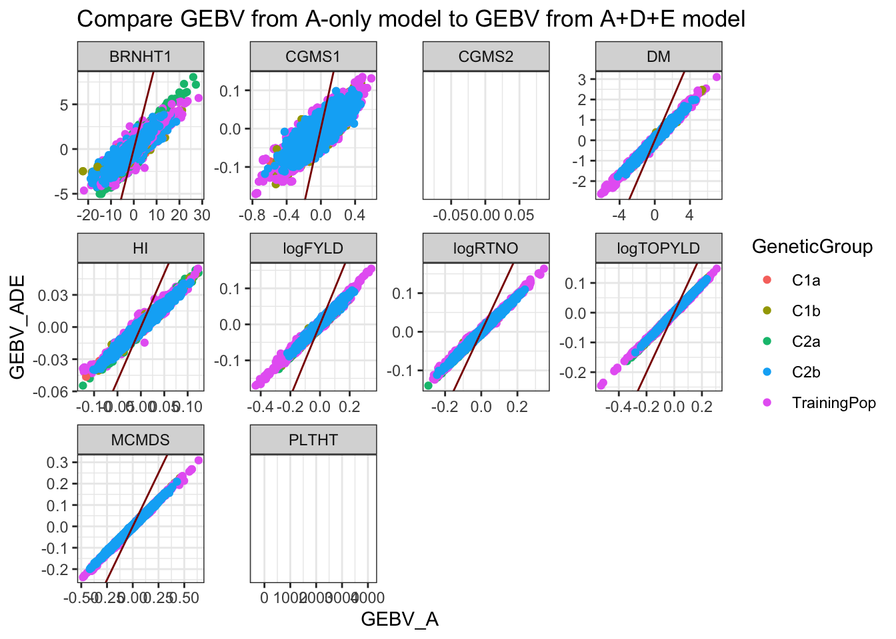
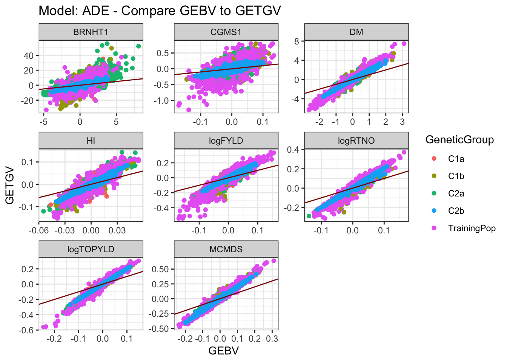

Last updated: 2020-04-28
Checks: 7 0
Knit directory: NRCRI_2020GS/
This reproducible R Markdown analysis was created with workflowr (version 1.6.1). The Checks tab describes the reproducibility checks that were applied when the results were created. The Past versions tab lists the development history.
Great! Since the R Markdown file has been committed to the Git repository, you know the exact version of the code that produced these results.
Great job! The global environment was empty. Objects defined in the global environment can affect the analysis in your R Markdown file in unknown ways. For reproduciblity it’s best to always run the code in an empty environment.
The command set.seed(20200421) was run prior to running the code in the R Markdown file. Setting a seed ensures that any results that rely on randomness, e.g. subsampling or permutations, are reproducible.
Great job! Recording the operating system, R version, and package versions is critical for reproducibility.
Nice! There were no cached chunks for this analysis, so you can be confident that you successfully produced the results during this run.
Great job! Using relative paths to the files within your workflowr project makes it easier to run your code on other machines.
Great! You are using Git for version control. Tracking code development and connecting the code version to the results is critical for reproducibility.
The results in this page were generated with repository version 8c45991. See the Past versions tab to see a history of the changes made to the R Markdown and HTML files.
Note that you need to be careful to ensure that all relevant files for the analysis have been committed to Git prior to generating the results (you can use wflow_publish or wflow_git_commit). workflowr only checks the R Markdown file, but you know if there are other scripts or data files that it depends on. Below is the status of the Git repository when the results were generated:
Ignored files:
Ignored: .DS_Store
Ignored: .Rhistory
Ignored: .Rproj.user/
Ignored: analysis/.DS_Store
Ignored: data/.DS_Store
Ignored: output/.DS_Store
Untracked files:
Untracked: NRCRI 2020 GS.gslides
Untracked: data/DatabaseDownload_42120/
Untracked: data/GBSdataMasterList_31818.csv
Untracked: data/IITA_GBStoPhenoMaster_33018.csv
Untracked: data/NRCRI_CleanedTrialData_2020April21.rds
Untracked: data/NRCRI_ExptDesignsDetected_2020April21.rds
Untracked: data/NRCRI_GBStoPhenoMaster_40318.csv
Untracked: data/iita_blupsForCrossVal_72619.rds
Untracked: data/iita_blupsForCrossVal_outliersRemoved_73019.rds
Untracked: output/DosageMatrix_NRCRI_SamplesForGP_2020April27.rds
Untracked: output/GEBV_NRCRI_IITAaugmented_ModelADE_2020April27.rds
Untracked: output/GEBV_NRCRI_IITAaugmented_ModelA_2020April27.rds
Untracked: output/GEBV_NRCRI_NRCRIalone_ModelADE_2020April27.rds
Untracked: output/GEBV_NRCRI_NRCRIalone_ModelA_2020April27.rds
Untracked: output/GETGV_NRCRI_IITAaugmented_ModelADE_2020April27.rds
Untracked: output/GETGV_NRCRI_NRCRIalone_ModelADE_2020April27.rds
Untracked: output/Kinship_AA_NRCRI_2020April27.rds
Untracked: output/Kinship_AD_NRCRI_2020April27.rds
Untracked: output/Kinship_A_NRCRI_2020April27.rds
Untracked: output/Kinship_DD_NRCRI_2020April27.rds
Untracked: output/Kinship_D_NRCRI_2020April27.rds
Untracked: output/NRCRI_CuratedTrials_2020April21.rds
Untracked: output/NRCRI_CuratedTrials_2020April27.rds
Untracked: output/cvresults_AD_nrOnly.rds
Untracked: output/cvresults_A_iitaAugmented.rds
Untracked: output/cvresults_A_nrOnly.rds
Untracked: output/genomicPredictions_ModelADE_NRCRI_2020April27.rds
Untracked: output/genomicPredictions_ModelA_NRCRI_2020April27.rds
Untracked: output/maxNOHAV_byStudy_NRCRI_2020April27.csv
Untracked: output/nrcri_blupsForModelTraining_2020April21.rds
Untracked: output/nrcri_blupsForModelTraining_2020April27.rds
Untracked: workflowr_log.R
Note that any generated files, e.g. HTML, png, CSS, etc., are not included in this status report because it is ok for generated content to have uncommitted changes.
These are the previous versions of the repository in which changes were made to the R Markdown (analysis/05-GetGEBVs.Rmd) and HTML (docs/05-GetGEBVs.html) files. If you’ve configured a remote Git repository (see ?wflow_git_remote), click on the hyperlinks in the table below to view the files as they were in that past version.
| File | Version | Author | Date | Message |
|---|---|---|---|---|
| Rmd | 8c45991 | wolfemd | 2020-04-28 | Publish the first set of analyses and files for NRCRI 2020 GS. |
Current Step
library(tidyverse); library(magrittr);
A<-readRDS(file=here::here("output","Kinship_A_NRCRI_2020April27.rds"))
D<-readRDS(file=here::here("output","Kinship_A_NRCRI_2020April27.rds"))
#AA<-readRDS(file=here::here("output","Kinship_AA_NRCRI_2020April27.rds"))
AD<-readRDS(file=here::here("output","Kinship_AD_NRCRI_2020April27.rds"))
#DD<-readRDS(file=here::here("output","Kinship_DD_NRCRI_2020April27.rds"))
blups_iita<-readRDS(file=here::here("data","iita_blupsForCrossVal_outliersRemoved_73019.rds"))
blups_iita<-blups_iita %>%
dplyr::select(Trait,blups) %>%
unnest(blups) %>%
dplyr::select(-`std error`) %>%
filter(GID %in% rownames(A),
!grepl("TMS13F|TMS14F|TMS15F|2013_",GID)) # don't want IITA GS progenies
blups_nrcri<-readRDS(file=here::here("output","nrcri_blupsForModelTraining_2020April27.rds"))
blups_nrcri<-blups_nrcri %>%
dplyr::select(Trait,modelOutput) %>%
unnest(modelOutput) %>%
dplyr::select(Trait,BLUPs) %>%
unnest(BLUPs) %>%
filter(GID %in% rownames(A))
blups<-blups_nrcri %>%
nest(TrainingData=-Trait) %>%
mutate(Dataset="NRCRIalone") %>%
bind_rows(blups_nrcri %>%
bind_rows(blups_iita %>% filter(Trait %in% blups_nrcri$Trait)) %>%
nest(TrainingData=-Trait) %>%
mutate(Dataset="IITAaugmented"))
blups#' @param blups nested data.frame with list-column "TrainingData" containing BLUPs
#' @param modelType string, A, AD or ADE representing model with Additive-only, Add. plus Dominance, and Add. plus Dom. plus. Epistasis (AA+AD+DD), respectively.
#' @param grms list of GRMs. Any genotypes in the GRMs get predicted with, or without phenotypes. Each element is named either A, D, AA, AD, DD. Matrices supplied must match required by A, AD and ADE models. For ADE grms=list(A=A,D=D,AA=AA,AD=AD,DD=DD).
runGenomicPredictions<-function(blups,modelType,grms,ncores=1,gid="GID",...){
require(sommer);
runOnePred<-possibly(function(trainingdata,modelType,grms){
trainingdata[[paste0(gid,"a")]]<-factor(trainingdata[[gid]],levels=rownames(grms[["A"]]))
if(modelType %in% c("AD","ADE")){ trainingdata[[paste0(gid,"d")]]<-factor(trainingdata[[gid]],levels=rownames(grms[["D"]]))
if(modelType=="ADE"){
#trainingdata[[paste0(gid,"aa")]]<-factor(trainingdata[[gid]],levels=rownames(grms[["AA"]]))
trainingdata[[paste0(gid,"ad")]]<-factor(trainingdata[[gid]],levels=rownames(grms[["AD"]]))
diag(grms[["AD"]])<-diag(grms[["AD"]])+1e-06
#trainingdata[[paste0(gid,"dd")]]<-factor(trainingdata[[gid]],levels=rownames(grms[["DD"]]))
}
}
# Set-up random model statements
randFormula<-paste0("~vs(",gid,"a,Gu=A)")
if(modelType %in% c("AD","ADE")){
randFormula<-paste0(randFormula,"+vs(",gid,"d,Gu=D)")
if(modelType=="ADE"){
randFormula<-paste0(randFormula,"+vs(",gid,"ad,Gu=AD)")
# "+vs(",gid,"aa,Gu=AA)",
# "+vs(",gid,"dd,Gu=DD)")
}
}
# Fit genomic prediction model
fit <- mmer(fixed = drgBLUP ~1,
random = as.formula(randFormula),
weights = WT,
data=trainingdata)
# Gather the BLUPs
gblups<-tibble(GID=as.character(names(fit$U[[paste0("u:",gid,"a")]]$drgBLUP)),
GEBV=as.numeric(fit$U[[paste0("u:",gid,"a")]]$drgBLUP))
if(modelType %in% c("AD","ADE")){
gblups %<>% mutate(GEDD=as.numeric(fit$U[[paste0("u:",gid,"d")]]$drgBLUP))
if(modelType=="ADE"){
gblups %<>% mutate(#GEEDaa=as.numeric(fit$U[[paste0("u:",gid,"aa")]]$drgBLUP),
GEEDad=as.numeric(fit$U[[paste0("u:",gid,"ad")]]$drgBLUP))
#GEEDdd=as.numeric(fit$U[[paste0("u:",gid,"dd")]]$drgBLUP))
}
}
# Calc GETGVs
## Note that for modelType=="A", GEBV==GETGV
gblups %<>%
mutate(GETGV=rowSums(.[,grepl("GE",colnames(.))]))
varcomps<-summary(fit)$varcomp
out<-tibble(gblups=list(gblups),varcomps=list(varcomps))
return(out)
},otherwise = NA)
## Run models across all train-test splits
## Parallelize
require(furrr); plan(multiprocess); options(mc.cores=ncores);
predictions<-blups %>%
mutate(genomicPredOut=future_map(TrainingData,~runOnePred(trainingdata=.,
modelType=modelType,grms=grms)))
return(predictions)
}cbsulm18 (88 cores; 512GB)
Model A
options(future.globals.maxSize= 1500*1024^2)
predModelA<-runGenomicPredictions(blups,modelType="A",grms=list(A=A),gid="GID",ncores=1)
saveRDS(predModelA,file = here::here("output","genomicPredictions_ModelA_NRCRI_2020April27.rds"))Model ADE
library(tidyverse); library(magrittr);
predModelA<-readRDS(file = here::here("output","genomicPredictions_ModelA_NRCRI_2020April27.rds"))
predModelADE<-readRDS(file = here::here("output","genomicPredictions_ModelADE_NRCRI_2020April27.rds"))predModelA %>%
dplyr::select(Trait,Dataset,genomicPredOut) %>%
unnest(genomicPredOut) %>%
select(-varcomps) %>%
unnest(gblups) %>%
select(-GETGV) %>% rename(GEBV_A=GEBV) %>%
left_join(predModelADE %>%
mutate(islgl=map_lgl(genomicPredOut,is.logical)) %>%
filter(islgl==FALSE) %>%
dplyr::select(Trait,Dataset,genomicPredOut) %>%
unnest(genomicPredOut) %>%
select(-varcomps) %>%
unnest(gblups) %>%
select(Trait,Dataset,GID,GEBV) %>% rename(GEBV_ADE=GEBV)) %>%
mutate(GeneticGroup=NA,
GeneticGroup=ifelse(grepl("NR17F",GID,ignore.case = T),"C2a",
ifelse(grepl("C2bF",GID,ignore.case = T),"C2b",
ifelse(grepl("^F",GID) & !grepl("C1b",GID),"C1a",
ifelse(grepl("C1b",GID,
ignore.case = T),"C1b","TrainingPop"))))) %>%
ggplot(.,aes(x=GEBV_A,y=GEBV_ADE,color=GeneticGroup)) +
geom_point() + theme_bw() + geom_abline(slope=1, color='darkred') +
facet_wrap(~Trait, scales = 'free') +
labs(title="Compare GEBV from A-only model to GEBV from A+D+E model")
predModelADE %>%
mutate(islgl=map_lgl(genomicPredOut,is.logical)) %>%
filter(islgl==FALSE) %>%
dplyr::select(Trait,Dataset,genomicPredOut) %>%
unnest(genomicPredOut) %>%
select(-varcomps) %>%
unnest(gblups) %>%
select(Trait,Dataset,GID,GEBV,GETGV) %>%
mutate(GeneticGroup=NA,
GeneticGroup=ifelse(grepl("NR17F",GID,ignore.case = T),"C2a",
ifelse(grepl("C2bF",GID,ignore.case = T),"C2b",
ifelse(grepl("^F",GID) & !grepl("C1b",GID),"C1a",
ifelse(grepl("C1b",GID,
ignore.case = T),"C1b","TrainingPop"))))) %>%
ggplot(.,aes(x=GEBV,y=GETGV,color=GeneticGroup)) +
geom_point() + theme_bw() + geom_abline(slope=1, color='darkred') +
facet_wrap(~Trait, scales = 'free') +
labs(title="Model: ADE - Compare GEBV to GETGV")
predModelA %>%
dplyr::select(Trait,Dataset,genomicPredOut) %>%
unnest(genomicPredOut) %>%
select(-varcomps) %>%
unnest(gblups) %>%
select(-GETGV) %>%
spread(Trait,GEBV) %>%
mutate(GeneticGroup=NA,
GeneticGroup=ifelse(grepl("NR17F",GID,ignore.case = T),"C2a",
ifelse(grepl("C2bF",GID,ignore.case = T),"C2b",
ifelse(grepl("^F",GID) & !grepl("C1b",GID),"C1a",
ifelse(grepl("C1b",GID,
ignore.case = T),"C1b","TrainingPop"))))) %>%
nest(GEBVs=-Dataset) %>%
mutate(write=map2(Dataset,GEBVs,~write.csv(x = .y, file = here::here("output",paste0("GEBV_NRCRI_",.x,"_ModelA_2020April27.rds")))))# A tibble: 2 x 3
Dataset GEBVs write
<chr> <list> <list>
1 IITAaugmented <tibble [7,062 × 12]> <NULL>
2 NRCRIalone <tibble [7,062 × 12]> <NULL>## Format and write GEBV
predModelADE %>%
mutate(islgl=map_lgl(genomicPredOut,is.logical)) %>%
filter(islgl==FALSE) %>%
dplyr::select(Trait,Dataset,genomicPredOut) %>%
unnest(genomicPredOut) %>%
select(-varcomps) %>%
unnest(gblups) %>%
select(Trait,Dataset,GID,GEBV) %>%
spread(Trait,GEBV) %>%
mutate(GeneticGroup=NA,
GeneticGroup=ifelse(grepl("NR17F",GID,ignore.case = T),"C2a",
ifelse(grepl("C2bF",GID,ignore.case = T),"C2b",
ifelse(grepl("^F",GID) & !grepl("C1b",GID),"C1a",
ifelse(grepl("C1b",GID,
ignore.case = T),"C1b","TrainingPop"))))) %>%
nest(GEBVs=-Dataset) %>%
mutate(write=map2(Dataset,GEBVs,~write.csv(x = .y, file = here::here("output",paste0("GEBV_NRCRI_",.x,"_ModelADE_2020April27.rds")))))# A tibble: 2 x 3
Dataset GEBVs write
<chr> <list> <list>
1 IITAaugmented <tibble [7,062 × 10]> <NULL>
2 NRCRIalone <tibble [7,062 × 10]> <NULL>## Format and write GETGV
predModelADE %>%
mutate(islgl=map_lgl(genomicPredOut,is.logical)) %>%
filter(islgl==FALSE) %>%
dplyr::select(Trait,Dataset,genomicPredOut) %>%
unnest(genomicPredOut) %>%
select(-varcomps) %>%
unnest(gblups) %>%
select(Trait,Dataset,GID,GETGV) %>%
spread(Trait,GETGV) %>%
mutate(GeneticGroup=NA,
GeneticGroup=ifelse(grepl("NR17F",GID,ignore.case = T),"C2a",
ifelse(grepl("C2bF",GID,ignore.case = T),"C2b",
ifelse(grepl("^F",GID) & !grepl("C1b",GID),"C1a",
ifelse(grepl("C1b",GID,
ignore.case = T),"C1b","TrainingPop"))))) %>%
nest(GETGVs=-Dataset) %>%
mutate(write=map2(Dataset,GETGVs,
~write.csv(x = .y,
file = here::here("output",paste0("GETGV_NRCRI_",.x,"_ModelADE_2020April27.rds")))))# A tibble: 2 x 3
Dataset GETGVs write
<chr> <list> <list>
1 IITAaugmented <tibble [7,062 × 10]> <NULL>
2 NRCRIalone <tibble [7,062 × 10]> <NULL>
R version 3.6.1 (2019-07-05)
Platform: x86_64-apple-darwin15.6.0 (64-bit)
Running under: macOS Mojave 10.14.6
Matrix products: default
BLAS: /Library/Frameworks/R.framework/Versions/3.6/Resources/lib/libRblas.0.dylib
LAPACK: /Library/Frameworks/R.framework/Versions/3.6/Resources/lib/libRlapack.dylib
locale:
[1] en_US.UTF-8/en_US.UTF-8/en_US.UTF-8/C/en_US.UTF-8/en_US.UTF-8
attached base packages:
[1] stats graphics grDevices utils datasets methods base
other attached packages:
[1] magrittr_1.5 forcats_0.5.0 stringr_1.4.0 dplyr_0.8.5
[5] purrr_0.3.4 readr_1.3.1 tidyr_1.0.2 tibble_3.0.1
[9] ggplot2_3.3.0 tidyverse_1.3.0 workflowr_1.6.1
loaded via a namespace (and not attached):
[1] tidyselect_1.0.0 xfun_0.13 haven_2.2.0 lattice_0.20-41
[5] colorspace_1.4-1 vctrs_0.2.4 generics_0.0.2 htmltools_0.4.0
[9] yaml_2.2.1 utf8_1.1.4 rlang_0.4.5 later_1.0.0
[13] pillar_1.4.3 withr_2.2.0 glue_1.4.0 DBI_1.1.0
[17] dbplyr_1.4.3 modelr_0.1.6 readxl_1.3.1 lifecycle_0.2.0
[21] munsell_0.5.0 gtable_0.3.0 cellranger_1.1.0 rvest_0.3.5
[25] evaluate_0.14 labeling_0.3 knitr_1.28 httpuv_1.5.2
[29] fansi_0.4.1 broom_0.5.6 Rcpp_1.0.4.6 promises_1.1.0
[33] backports_1.1.6 scales_1.1.0 jsonlite_1.6.1 farver_2.0.3
[37] fs_1.4.1 hms_0.5.3 digest_0.6.25 stringi_1.4.6
[41] grid_3.6.1 rprojroot_1.3-2 here_0.1 cli_2.0.2
[45] tools_3.6.1 crayon_1.3.4 whisker_0.4 pkgconfig_2.0.3
[49] ellipsis_0.3.0 xml2_1.3.2 reprex_0.3.0 lubridate_1.7.8
[53] rstudioapi_0.11 assertthat_0.2.1 rmarkdown_2.1 httr_1.4.1
[57] R6_2.4.1 nlme_3.1-147 git2r_0.26.1 compiler_3.6.1